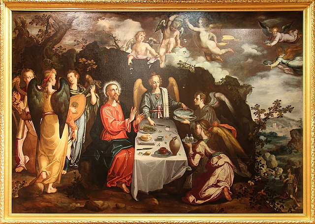
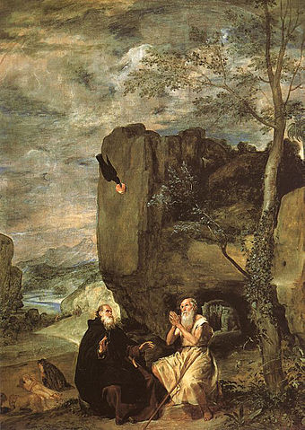
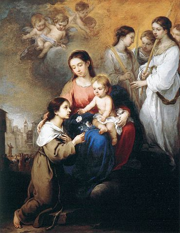
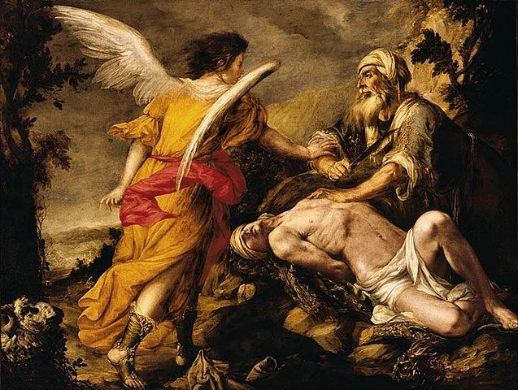
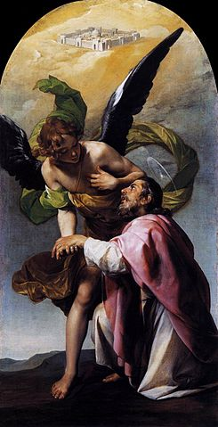
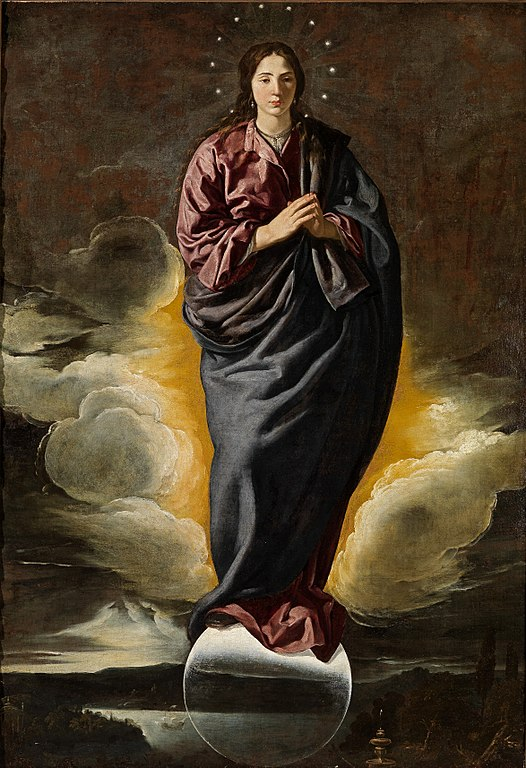

Christ served by angels in the Desert by Francisco Pacheco (1616)
This gallery presents works of Andalusia's most famous painters.

Saint Anthony the Great and Saint Paul the Anchorite by Diego Velázquez (1634)
Pacheco (previous image) was the master of Velázquez.

Virgin and Child with St Rosalina of Palermo by Bartolomé Esteban Murillo (1670)
Most Andalucian painters made religious art. Murillo is no exception. His subjects are mostly religious and he made some pieces of art in service of the Seville Cathedral.

The Sacrifice of Isaac by Juan de Valdés Leal (1657-59)
Like many other artists in this gallery, Valdés was born in the city of Seville.
Most of his children became painters too.
The Sacrificie of Isaac is quite a common subject for religious art. Valdés' fellow countryman Caravaggio made a famous version of it.
Photograph (present day)
Picasso is one of the best known Spanish artists. The above is a picture of the artist, but you may view his (copyrighted) work here.

Saint John the Evangelist's Vision of Jerusalem by Alonso Cano (1636-37)
Alonso Cano learned architecture and sculpting besides the craft of painting.
Cano had been tortured by the Spanish court, for he was suspected of killing his wife. His artworks are versatile and have an interesting use of colours.

'Immaculada' by Alonso Cano (1620)
One more painting by Alonso Cano, showing his versatility in composition and colorwork (End of Gallery).